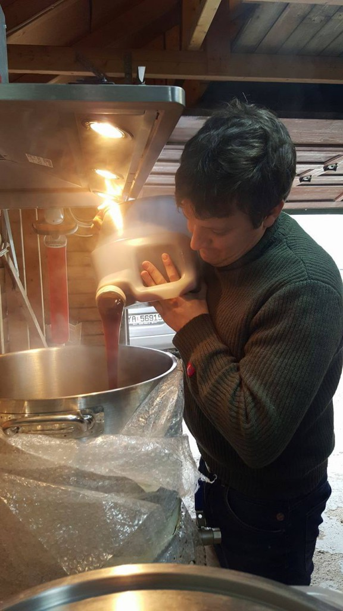

Mange forslag lå på bordet da #12 skulle bli til, men valget falt på denne mørke herren med bjørneskinnshatt og unibrow. Aldri før har man brukt så mye penger på ett enkelt brygg. Heller aldri har brygget vært så tyktflytende, eller hatt så stort potensiale for høy prosent.
Det ble ikke tatt videre mye notater denne gangen, så loggen skrives på grunnlag av sviktende hukommelse og mentale bilder. Forvent lite.
Bryggedagen begynte på tidlig formiddag, og man var noenlunde klar med meskevann da ingrediensene ankom. Det viste seg å være en relativt beskjeden mengde korn i denne oppskriften, men dette ble veid opp for av ei stor kanne meget viskøs maltekstrakt. Denne juksemetoden var ukjent for oss alle, og vi visste hverken hvor mye vi skulle bruke, når det skulle i gryta, eller at det brennkjapt satte seg fast i bunnen, og etterlot et fint svart belegg av brent sukker – som vi senere skulle få stifte nærmere bekjentskap med.
Uansett, spennende var det, og nå vet vi alle litt mer om hva vi ikke skal gjøre neste gang.
Mesking gikk ellers som det ikke pleier. Ingen sikringer røk, ingenting kokte over, og vi hadde noenlunde kontroll på temperaturen.
Da det kom til skyllingen var vi heldigvis tilbake i kjent territorie, da vi selvfølgelig hadde glemt å varme skyllevann.
Koking kan vi. Maltekstrakt kunne vel heller ikke være så vanskelig? Maltekstrakt kan vi nå.
Kjøling kan vi.
Gjæren ble gjort klar i god tid, og den fikk formert seg rikelig før den slapp til i matfatet. Så rikelig at begge lokk havnet på gulvet.
Det var denne gangen vanskelig å måle OG. Målestokken gikk nemlig ikke langt nok opp.
Vi anslår at den havnet på ca 1.108, men den var uansett et sted mellom 1.105 og 1.110.
